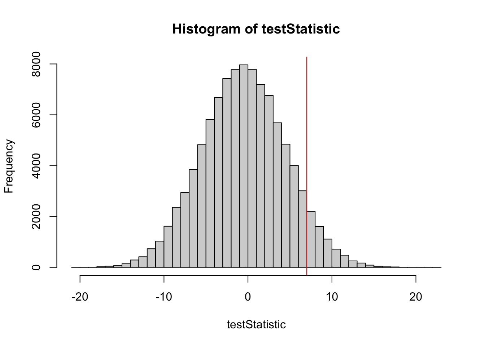
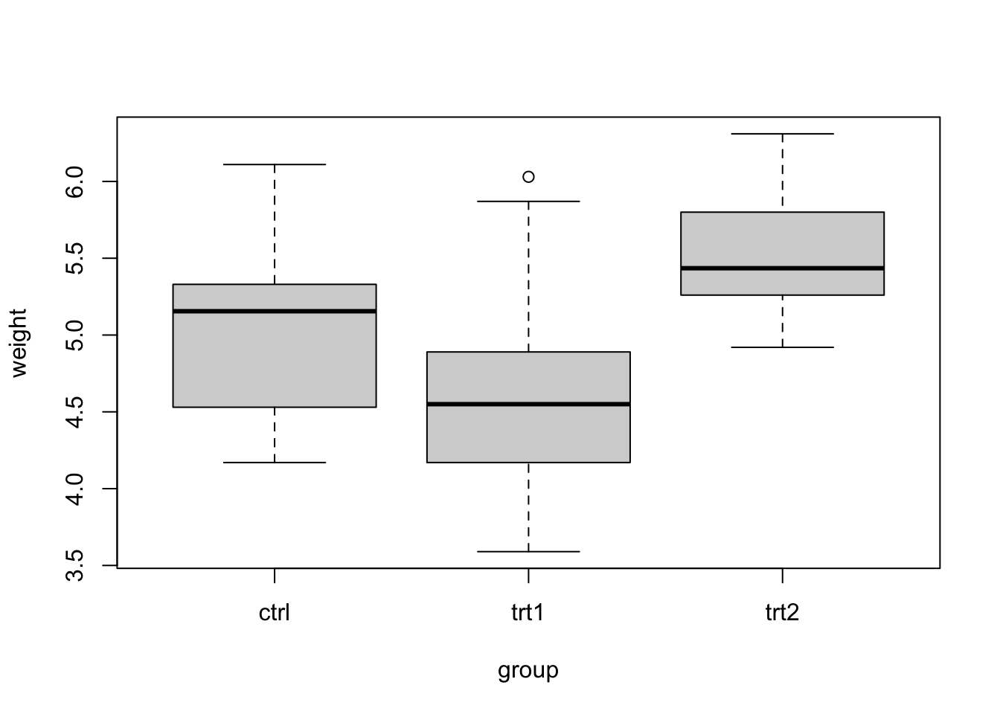
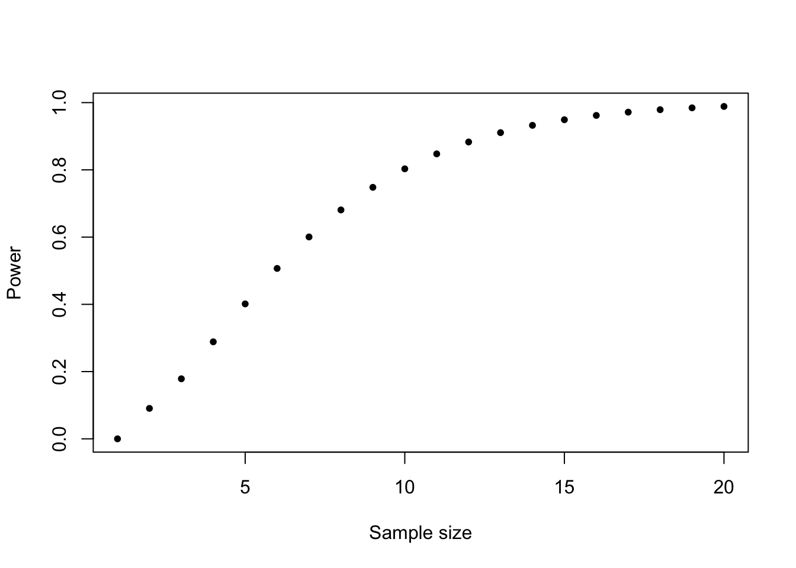
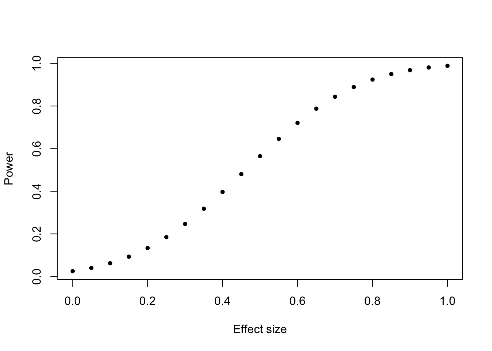

# Part 3
# Hypothesis testing
# Simulation of p-values -------------------------------------------------
# Imagine we do an experiment with two groups, one treatment and one control group
# Test outcomes are binary (e.g. whether individuals are cured)
# 1. We need a test statistic
# for example: number cured in control minus number cured in treatment: control - treatment
# 2. We need the distribution of this test statistic under the null
# Let's create a true world without effect:
PperGroup = 50 # number of replicates (e.g., persons per treatment group)
pC = 0.5 #probability of being cured in control group
pT = 0.5 #probability of being cured in treatment group; = same because we want to use these to get the distribution of the test statistic we define below when H0 is true (no effect)
set.seed(123)
# Let's draw a sample from this world without effect
control = rbinom(n = 1, size = PperGroup, prob = pC)
treat = rbinom(n = 1, size = PperGroup, prob = pT)
#calculate the test statistic:
control - treat[1] -5#and plot
barplot(c(control, treat), ylim = c(0, 50))
# Now, let's do this very often to get the distribution under H0
testStatistic = rep(NA, 100000)
for (i in 1:100000) {
control = rbinom(n = 1, size = PperGroup, prob = pC)
treat = rbinom(n = 1, size = PperGroup, prob = pT)
testStatistic[i] = control - treat # test statistic
}
hist(testStatistic, breaks = 50)
# okay, we have our test statistic + the frequency distribution of our statistic
# if the H0 = true
# now we make an experiment:
# assume that we observed the following data: C = 30 T = 23
testStatisticData = 30 - 23
abline(v = testStatisticData, col = "red")
mean(testStatistic > testStatisticData) #compare each value in our testStatistic [1] 0.0671#distribution with the observed value and calculate proportion of TRUE values
#(where testStatistic > testStatisticData)
# how you would do this correctly
prop.test(c(30, 23), c(PperGroup, PperGroup))
2-sample test for equality of proportions with continuity correction
data: c(30, 23) out of c(PperGroup, PperGroup)
X-squared = 1.4452, df = 1, p-value = 0.2293
alternative hypothesis: two.sided
95 percent confidence interval:
-0.0737095 0.3537095
sample estimates:
prop 1 prop 2
0.60 0.46 # other test statistic with known distribution
# Pearson's chi-squared test statistic
# no need to simulate
##########################THEORY FIRST##############################
# The t-test -------------------------------------------------------------
# with real data
head(PlantGrowth) weight group
1 4.17 ctrl
2 5.58 ctrl
3 5.18 ctrl
4 6.11 ctrl
5 4.50 ctrl
6 4.61 ctrlboxplot(weight ~ group, data = PlantGrowth)
ctrl = PlantGrowth$weight[PlantGrowth$group == "ctrl"]
trt1 = PlantGrowth$weight[PlantGrowth$group == "trt1"]
# attention: t test assumes normal dirstribution of measurements in both groups!
# test normality before doing the t test:
shapiro.test(ctrl)
Shapiro-Wilk normality test
data: ctrl
W = 0.95668, p-value = 0.7475shapiro.test(trt1)
Shapiro-Wilk normality test
data: trt1
W = 0.93041, p-value = 0.4519# ATTENTION: If you have a small sample size, the shapiro.test will always be
# non-significant (i.e. not significantly different from a normal distribution)!
# This is because small sample size leads to low power for rejecting H0 of
# normal distribution
t.test(ctrl, trt1)
Welch Two Sample t-test
data: ctrl and trt1
t = 1.1913, df = 16.524, p-value = 0.2504
alternative hypothesis: true difference in means is not equal to 0
95 percent confidence interval:
-0.2875162 1.0295162
sample estimates:
mean of x mean of y
5.032 4.661 # note that this is a "Welch" t-test
# we will have a look at the differences among t-tests in the next large exercise
# What is H0? equal means
# What is the result? test is not significant, H0 is not rejected
# Explain the different values in the output!
##########################THEORY FIRST##############################
# Multiple testing -------------------------------------------------------
# conduct a t-test for each of the treatment combinations
# save each test as a new object (test 1 to 3)
control = PlantGrowth$weight[PlantGrowth$group == "ctrl"]
trt1 = PlantGrowth$weight[PlantGrowth$group == "trt1"]
trt2 = PlantGrowth$weight[PlantGrowth$group == "trt2"]
test1 = t.test(control, trt1)
test2 = t.test(control, trt2)
test3 = t.test(trt1, trt2)
c(test1$p.value, test2$p.value, test3$p.value)[1] 0.250382509 0.047899256 0.009298405# now adjust these values
p.adjust(c(test1$p.value, test2$p.value, test3$p.value)) # standard is holm, average conservative[1] 0.25038251 0.09579851 0.02789521p.adjust(c(test1$p.value, test2$p.value, test3$p.value), method = "bonferroni") # conservative[1] 0.75114753 0.14369777 0.02789521p.adjust(c(test1$p.value, test2$p.value, test3$p.value), method = "BH") # least conservative[1] 0.25038251 0.07184888 0.02789521# for details on the methods see help
##########################THEORY FIRST##############################
# Power ----------------------------------------------------------
# Poweranalysis
power.t.test(n = 10, delta = 1, sd = 1, type = "one.sample")
One-sample t test power calculation
n = 10
delta = 1
sd = 1
sig.level = 0.05
power = 0.8030962
alternative = two.sided# Power increases with sample size (effect size constant, sd constant):
pow <- function(n) power.t.test(n, delta = 1, sd = 1, type = "one.sample")$power
plot(1:20, sapply(1:20, pow), xlab = "Sample size", ylab = "Power", pch = 20)
# Power increases with effect size
pow <- function(d) power.t.test(n = 20, delta = d, sd = 1,
type = "one.sample")$power
plot(seq(0,1,0.05), sapply(seq(0,1,0.05), pow), xlab = "Effect size",
ylab = "Power", pch = 20)
# Power decreases with increasing standard deviation (or variance):
pow <- function(s) power.t.test(n = 20, delta = 1, sd = s,
type = "one.sample")$power
plot(seq(0.5,1.5,0.05), sapply(seq(0.5,1.5,0.05), pow),
xlab = "Standard deviation", ylab = "Power", pch = 20)